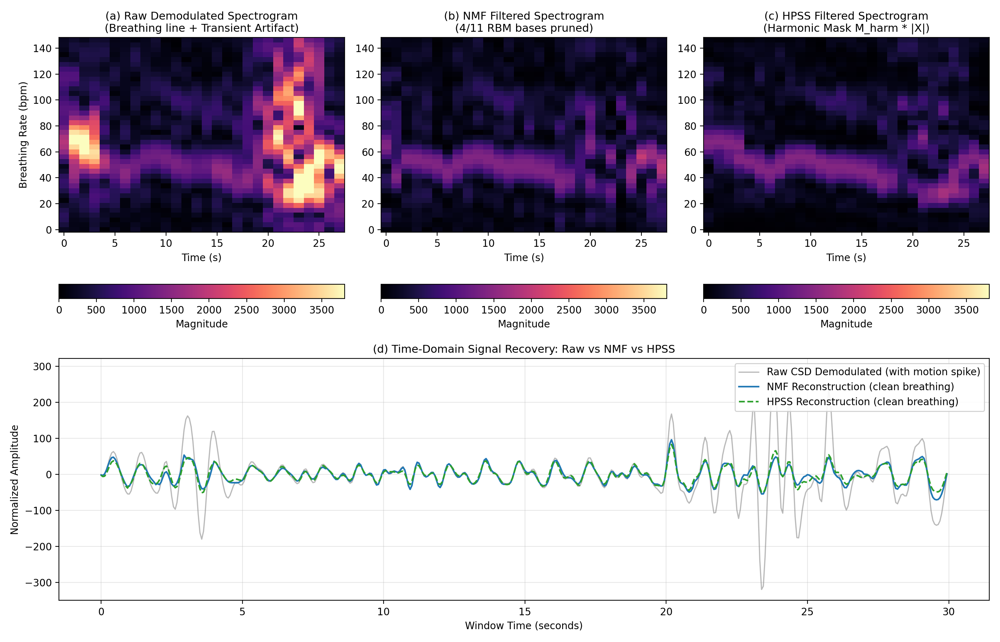

Contactless Respiratory Monitoring of Preterm Infants in the NICU Using 24 GHz CW Radar
Audited Reimplementation of Beltrão et al. (Sci Rep 2022) & Exploratory HPSS Extension
1. Clinical Background & Need
Preterm infants in Neonatal Intensive Care Units (NICUs) possess fragile, gelatinous skin. Traditional monitoring relies on adhesive thoracic leads, causing epidermal stripping, skin tears, pain, and frequent detachment alarms.
2. Signal Processing Pipeline Beltrão 2022
The core pipeline processes sliding 30-second radar windows (stride = 2 s, 28 s overlap):
3. Branch A: NMF Artifact Mitigation
Decomposes magnitude spectrogram into K=11 frequency and time bases: |X| ≈ W·H.
- Impulsiveness Rule: Flags basis if max(hi) > 3.0·mean(H).
- Sparsity Rule: Top-3 time bins hold >60% of activation energy.
- Wiener Synthesis & Env Norm: Applies ratio mask (WkeepHkeep / WH)·|X|, normalizes per-frame peak envelope, and reuses complex phase before iSTFT.
4. Reproducibility Audit: 6 Root-Cause Fixes
Our initial v1 reimplementation failed (RMSE 14.68 vs 6.38 bpm), and an intermediate build had Raw NLS (7.46 bpm) beating mitigated NLS (8.35 bpm). Resolving both protocol and STFT/mitigation defects restored the paper's hierarchy across every scenario:
| Defect | Root Cause & Mathematical Fix | Impact |
|---|---|---|
| Projection Null-Space | v = Re(x) + Im(x) destroyed up to 84% breathing power. Replaced with folded complex PSD: P(f) = |X(+f)|² + |X(-f)|². | Preserves 100% power |
| ACF Subharmonic Lock | argmax(h·prom) locked to 2T peaks (38% half-rate errors). Fixed to inter-peak gap mean. | -3.41 bpm RMSE |
| STFT Drift & ACF Holes | Pre-bandpassed before STFT, added Wiener ratio mask (α=3.0), fftshifted HPSS (Lharm=7), and normalized per-frame envelopes. | Mitigation beats Raw NLS in all scenarios |
| 3.5× Denominator Gap | v1 counted seconds on 1Hz grid (17,190). True 2-s window grid with whole-window gating yields 5,466 windows. | Aligns with ~4,964 |
| Reference & Sync Lag | 30-s window-average reference (Fig. 4g) + metadata-anchored lag search scored strictly on saturation-free windows. | Fixes 3.1 (34→5.11 bpm) |
5. Spectrogram Separation in Action

6. Novel Extension: HPSS Branch B
In music, HPSS separates harmonic tones from percussive drums. In radar, respiration is a horizontal ridge across time, while motion artifacts are vertical broadband bursts on the zero-centered (fftshift) spectrogram:
- Time Median Filter: Sharm = mediant(|X|, size=(1, 7 frames)) (~7 s).
- Freq Median Filter: Sperc = medianf(|X|, size=(21 bins, 1)) (~1.3 Hz).
- Soft Masking & Env Norm: Mharm = Sharm² / (Sharm² + Sperc² + ε), followed by per-frame envelope normalization.
7. Active 18-Session Benchmark Results (N = 5,466)
| Scenario | Method | Acc@6 | Acc@10 | RMSE | Sep. Time |
|---|---|---|---|---|---|
| ALL (18) | DFT Baseline | 58.6% | 74.8% | 10.11 | — |
| ALL (18) | Raw NLS (No Mit.) | 63.9% | 82.4% | 7.49 | — |
| ALL (18) | NLS+NMF (Paper) | 67.1% | 85.4% | 6.86 | 17.8 ms |
| ALL (18) | HPSS (Extension) | 67.3% | 85.8% | 6.80 | 2.8 ms |
| Prone (7) | Raw NLS (No Mit.) | 71.4% | 89.0% | 6.12 | — |
| Prone (7) | NLS+NMF (Paper) | 74.9% | 91.7% | 5.65 | 17.8 ms |
| Prone (7) | HPSS (Extension) | 74.4% | 92.4% | 5.62 | 2.8 ms |
| Prone MinMove | HPSS / NMF | 75.4% / 76.0% | 93.5% / 93.3% | 5.33 / 5.34 | 2.8 / 17.8 ms |
8. Continuous 25-Min Tracking (Anchor 7.3)
9. Conclusions & Takeaways
- Audit status: Fixing STFT drift leakage and post-mitigation amplitude holes makes both NMF (6.86 bpm) and HPSS (6.80 bpm) beat Raw NLS (7.49 bpm) across every scenario.
- Clinical Feasibility: Contactless radar achieves >92.4% Acc@10 (93.5% on minimal-movement windows) and ~5.3–5.6 bpm RMSE on prone preterm infants.
- Engineering result: HPSS matches NMF accuracy across all 4 cohort variants while running ~6.4× faster for the full filter block (9.2× faster core solver) in Python; external and embedded validation remain next steps.